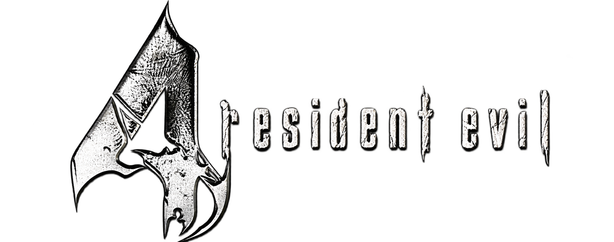
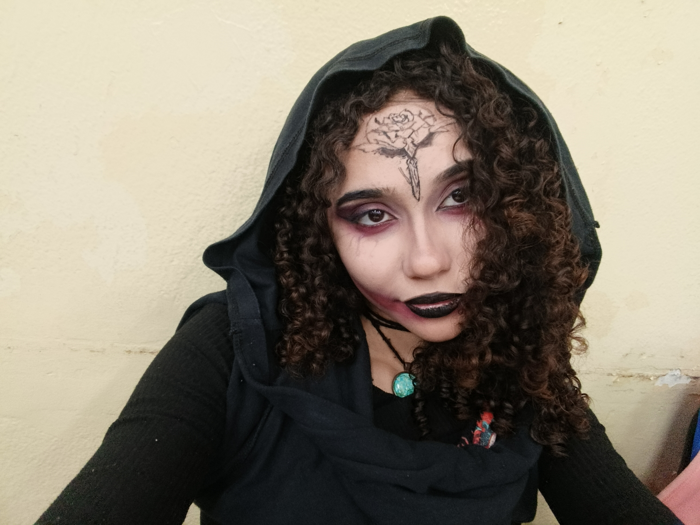

LEON S. KENNEDY
Ex-policial de Raccoon City que se tornou agente do governo americano.

Explore, compartilhe suas experiências, teste seus conhecimentos e conecte-se com outros jogadores que também fazem parte dessa história.
FAÇA PARTE DA COMUNIDADE
Lançado originalmente em 2005, Resident evil 4, é um jogo eletrônico de survival horror de tiro em terceira pessoa desenvolvido e publicado pela Capcom.
O jogo acompanha Leon S. Kennedy em uma missão para resgatar Ashley Graham, filha do presidente dos Estados Unidos. Em uma região rural isolada da Espanha, a investigação revela uma ameaça muito maior do que parecia.
Ex-policial de Raccoon City que se tornou agente do governo americano.

Filha do presidente dos Estados Unidos.

Espiã habilidosa que trabalha em missões secretas envolvendo organizações bioterroristas.

Espanhol com um passado ligado à pesquisa das Plagas e aos acontecimentos da aldeia.

Agente do governo americano responsável pela comunicação através do rádio com Leon.

Oferece armas, munições e equipamentos, além de aprimorar o arsenal de Leon durante sua jornada.

Líder religioso do culto Los Illuminados.

Membro de uma antiga família nobre espanhola e responsável pelo castelo da região.

Chefe da aldeia e um dos principais líderes de Los Illuminados.
Três territórios. Uma jornada marcada pelo medo.

O primeiro contato com a população local, onde a investigação de Leon revela a ameaça que domina a região.

Uma construção imponente, marcada por armadilhas, enigmas e os planos da família Salazar.

Uma instalação militar que revela os experimentos por trás da ameaça e conduz Leon ao confronto final.
Uma apresentação sobre quem está por trás deste projeto, minha relação com os jogos e o universo de Resident Evil.
CONHEÇA-ME
Se você é fã de Resident Evil 4, esse é o seu lugar. Aqui você troca teorias com outros jogadores, compara suas pontuações no quiz, acompanha seu desempenho no dashboard e compartilha as lembranças que o jogo deixou.
Já tem conta? Entrar